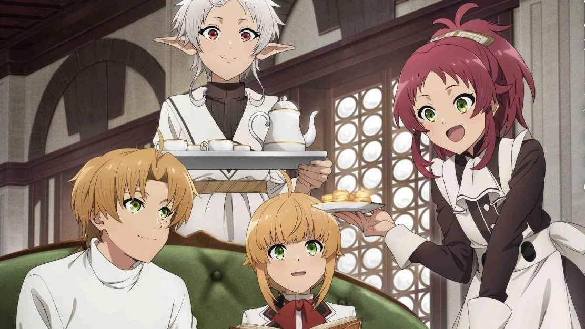
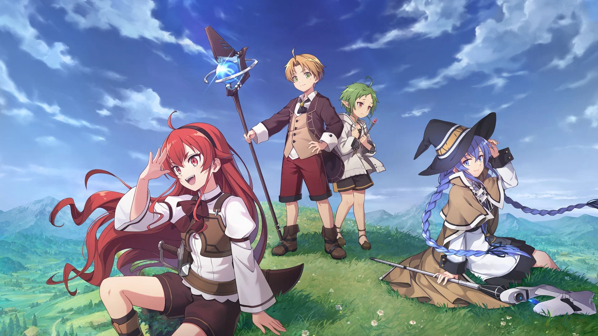
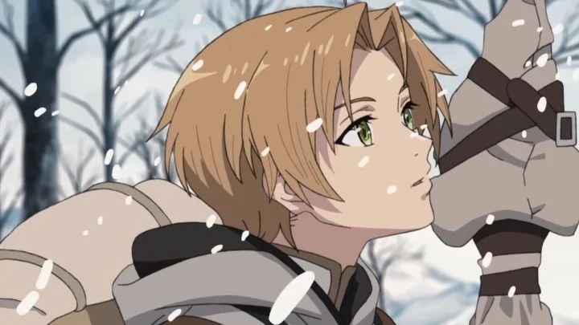
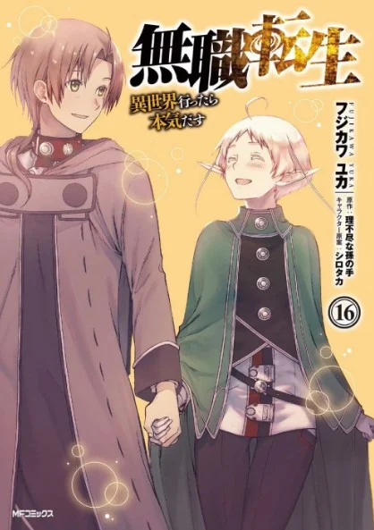
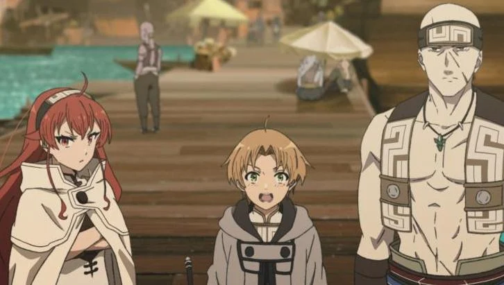
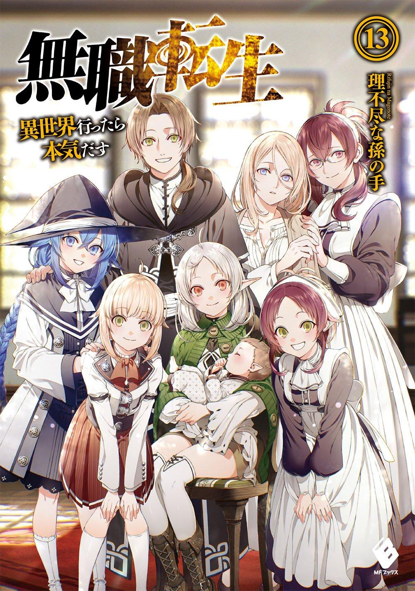
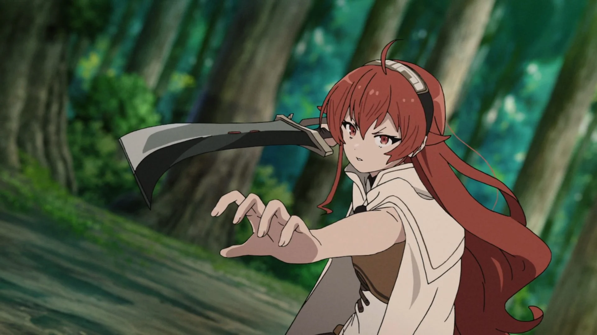

Segala Hal yang Harus Kamu Tahu Tentang Anime Mushoku Tensei
Diposting Oleh: Mochammad Ahsan Nur Ilham 9 Mei 2024.
Mushoku Tensei: Jobless Reincarnation, disingkat Mushoku Tensei, adalah seri light novel dari Jepang yang ditulis oleh Rifujin na Magonote dengan menghadirkan ilustrasi yang dibuat oleh Shirotaka. Serial ini cukup sukses dan digemari banyak orang karena menghadirkan tema isekai yang cukup unik. Saking suksesnya, serial ini juga diadaptasi menjadi versi manga dan animenya. Apakah kamu penasaran dengan Mushoku Tensei? Kali ini kita akan membahas segala hal yang harus kamu tahu tentang anime Mushoku Tensei. Kira-kira apa saja ya fakta uniknya?
1. Alur atau Plot Cerita Mushoku Tensei yang Menceritakan tentang Reinkarnasi Seorang Pengangguran
Alur Mushoku Tensei menceritakan tentang seorang pengangguran di Jepang yang berusia 34 tahun yang tidak disebutkan namanya. Dia diusir dari rumahnya setelah kematian orang tuanya. Setelah beberapa kali introspeksi diri, ia menyimpulkan bahwa hidupnya sangat tidak berguna. Ketika sedang berjalan menyusuri jalan raya, ia mencegat sebuah truk yang melaju kencang menuju ke arah sekelompok remaja, dalam upaya penyelamatan untuk melakukan sesuatu hal yang berguna dalam hidupnya, ia berhasil menarik salah satu remaja keluar dari bahaya sebelum akhirnya dia malah tertabrak truk dan mati. Terbangun dalam tubuh bayi, dia menyadari bahwa dia telah bereinkarnasi di dunia sihir. Dia memutuskan untuk menjadi orang yang sukses dalam kehidupan barunya, membuang identitas masa lalunya untuk kehidupan barunya sebagai Rudeus Greyrat. Karena afinitas yang diwariskan dan proses pelatihan yang dialaminya, Rudeus menjadi sangat terampil dalam bidang sihir dengan bantuan dari intuisi kehidupan sebelumnya. Selama masa kecilnya, ia menjadi murid penyihir iblis Roxy Migurdia, teman manusia setengah elf Sylphiette, dan guru pewaris tahta bangsawan Eris Boreas Greyrat. Rudeus mencoba menjadi yang terbaik untuk menjalani kehidupan baru ini tanpa adanya penyesalan lagi.
2. Rudeus akan Bersekolah di Universitas Sihir Ranoa pada Mushoku Tensei Season 2
Saat adegan after credit terakhir di season pertama Mushoku Tensei Episode 23, adegan itu mengungkapkan bahwa Mushoku Tensei season 2 akan menampilkan Rudy (Rudeus Greyrat) yang akhirnya bersekolah di Universitas Sihir Ranoa atas perintah teman Rudeus yang tidak dikenal.
3. Manga Mushoku Tensei Diciptakan oleh Yuka Fujikawa
Mushoku Tensei: Jobless Reincarnation adalah adaptasi manga dari light novel Mushoku Tensei yang ditulis oleh Rifujin na Magonote. Seri manga diilustrasikan oleh Yuka Fujikawa. Manganya yang diterbitkan oleh Media Factory, memulai debutnya di majalah Monthly Comic Flapper edisi Juni pada tahun 2014. Dengan volume pertama yang dirilis pada 23 Oktober 2014, serial ini telah dikompilasi menjadi 16 volume tankobon pada bulan Desember 2021.
4. Anime Mushoku Tensei dengan Sub Indonesia yang Legal Bisa Ditonton di iQIYI
Jika kamu penasaran ingin menonton serial anime Mushoku Tensei ini dengan bahasa Indonesia, kamu dapat menontonnya di situs atau platform streaming yang legal bernama iQIYI. Serial anime ini bisa ditonton di iQIYI dengan menekan link ini.
5. Serial ini Berawal dari Mushoku Tensei: Isekai Ittara Honki Dasu
Mushoku Tensei: Isekai Ittara Honki Dasu adalah sebuah seri light novel dari Jepang yang ditulis oleh Rifujin na Magonote. Mengisahkan tentang seorang pria pengangguran dan putus asa yang bereinkarnasi ke dunia sihir sambil mempertahankan ingatannya, ia bertekad untuk menjalani kehidupan barunya tanpa adanya penyesalan lagi. Serial ini awalnya dimulai sebagai serial novel berbasis web pada tanggal 22 November 2012 yang diunggah oleh penulis di situs web Shousetsuka ni Narou. Menyusul kesuksesannya dalam popularitas situs itu, serial ini diakuisisi oleh Kadokawa pada tahun berikutnya di bawah penerbit Media Factory milik mereka, dan secara resmi memulai publikasinya sebagai seri light novel pada 23 Januari 2014.
6. Eris adalah Karakter Tsundere dari Mushoku Tensei yang Cukup Unik
Eris Boreas Greyrat adalah seorang gadis bangsawan dan sepupu kedua Rudeus. Dia adalah karakter tsundere dengan sifat temperamental tetapi memiliki potensi yang bagus dalam Sword God Style. Dalam perjalanannya untuk kembali ke rumah setelah Insiden Teleport, karakternya berkembang untuk mencintai tokoh Rudeus. Karena itulah karakter Eris dianggap cukup unik dari serial bertema isekai ini.
Sumber Informasi: Dunia Games